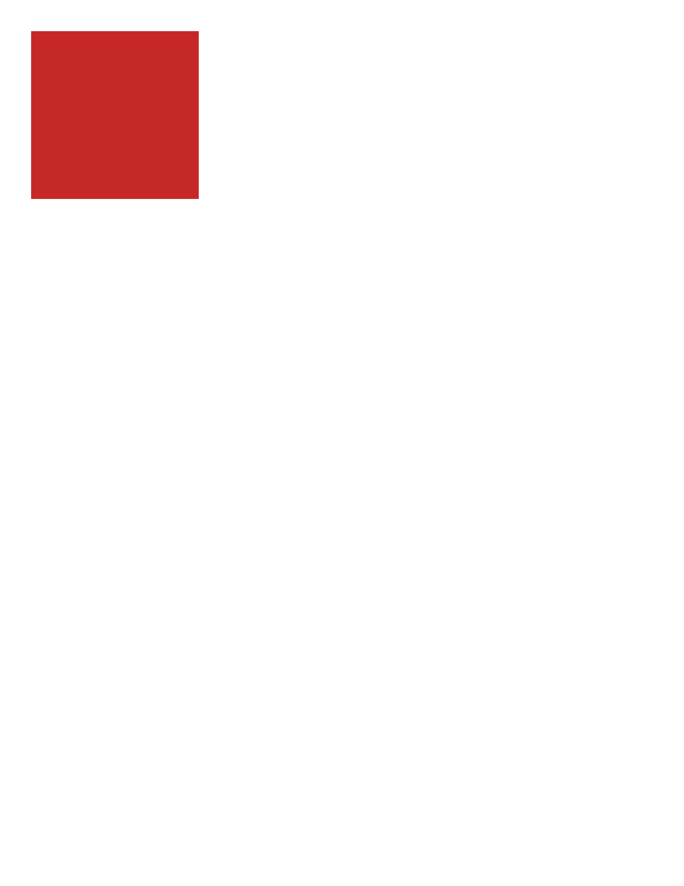
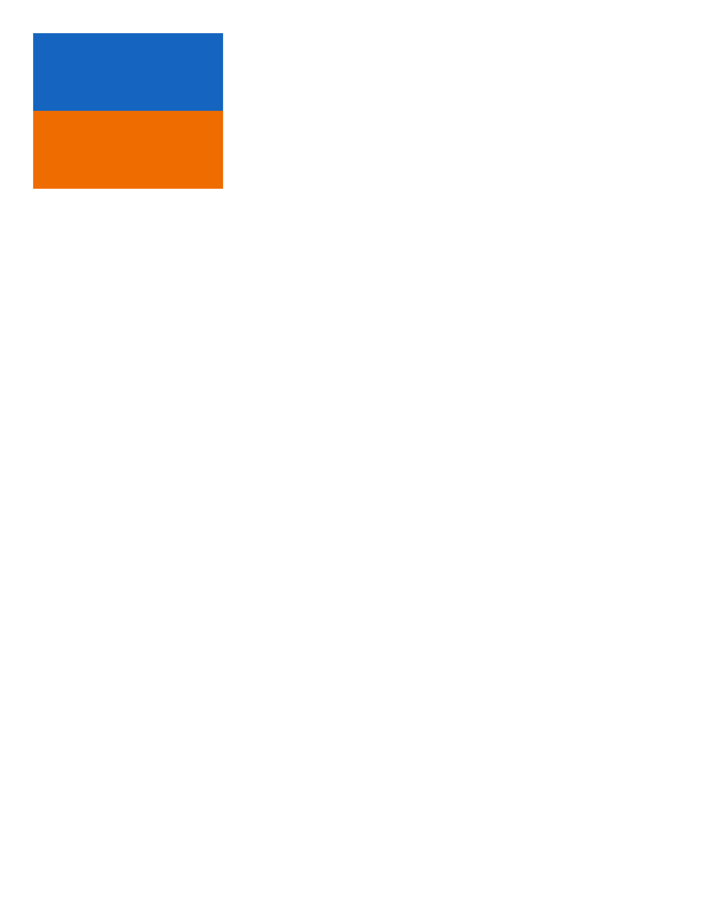
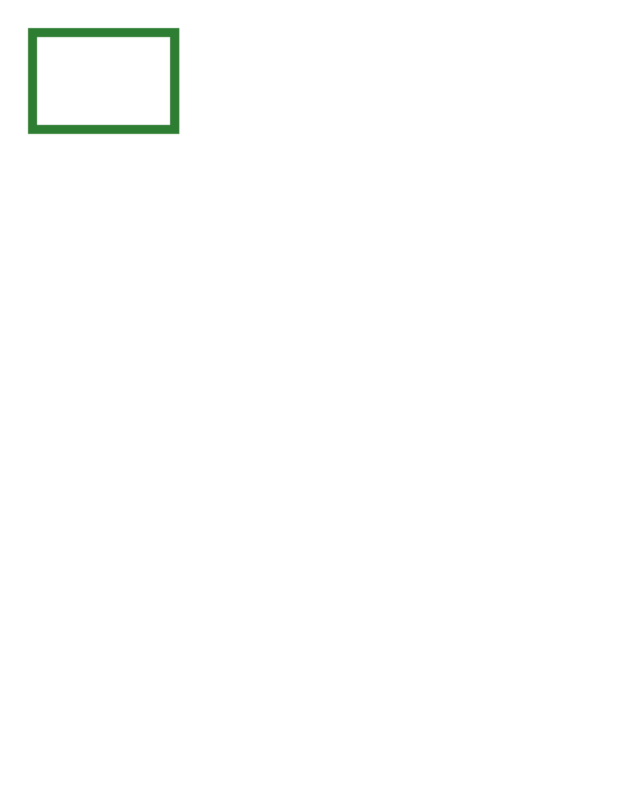
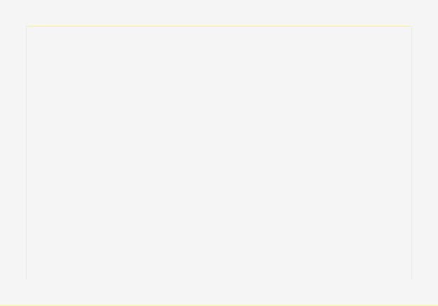
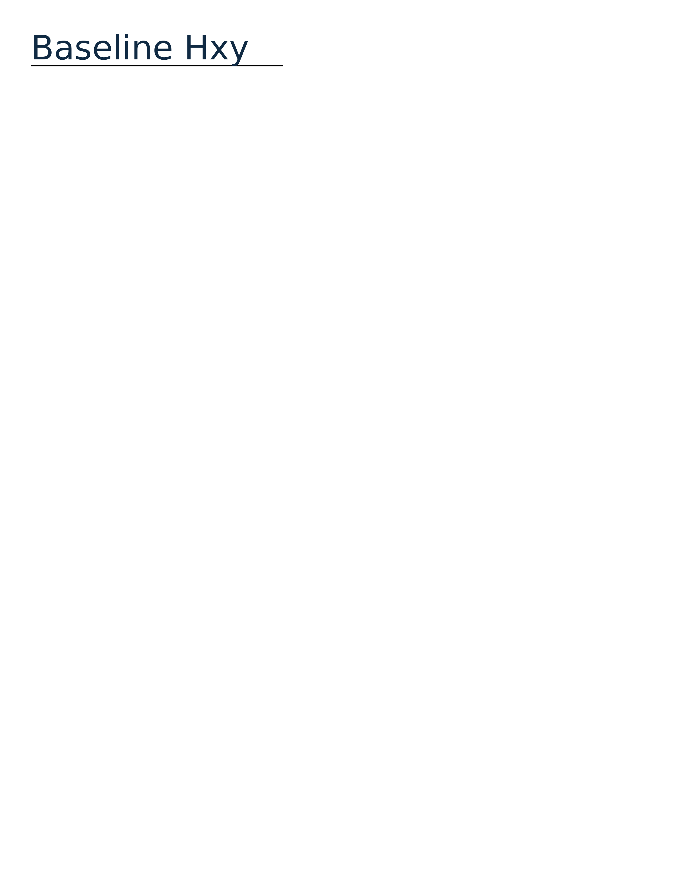
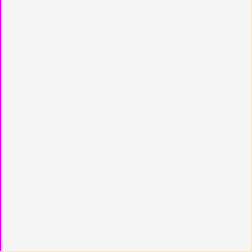

1<!DOCTYPE html>
2<html lang="en">
3<head>
4<meta charset="utf-8">
5<title>probe color swatch</title>
6<style>
7 * { margin: 0; box-sizing: border-box; }
8 html, body { background: #ffffff; }
9 /* Substrate canary: a pure background-color rectangle.
10 Tests background-color paint in isolation. */
11 .swatch {
12 width: 200px;
13 height: 200px;
14 background-color: #c62828;
15 }
16</style>
17</head>
18<body>
19 <div class="swatch"></div>
20</body>
21</html>

1<!DOCTYPE html>
2<html lang="en">
3<head>
4<meta charset="utf-8">
5<title>probe block flow</title>
6<style>
7 * { margin: 0; box-sizing: border-box; }
8 html, body { background: #ffffff; }
9 /* Substrate canary: two stacked solid blocks.
10 Tests block box generation + normal vertical flow. */
11 .a {
12 width: 220px;
13 height: 90px;
14 background-color: #1565c0;
15 }
16 .b {
17 width: 220px;
18 height: 90px;
19 background-color: #ef6c00;
20 }
21</style>
22</head>
23<body>
24 <div class="a"></div>
25 <div class="b"></div>
26</body>
27</html>


1<!DOCTYPE html>
2<html lang="en">
3<head>
4<meta charset="utf-8">
5<title>probe border box</title>
6<style>
7 * { margin: 0; box-sizing: border-box; }
8 html, body { background: #ffffff; }
9 /* Substrate canary: one box with a thick solid border and a
10 transparent fill. Tests border paint in isolation. */
11 .box {
12 width: 200px;
13 height: 140px;
14 background-color: transparent;
15 border: 12px solid #2e7d32;
16 }
17</style>
18</head>
19<body>
20 <div class="box"></div>
21</body>
22</html>
1<!DOCTYPE html>
2<html lang="en">
3<head>
4<meta charset="utf-8">
5<title>probe fill box</title>
6<style>
7 * { margin: 0; box-sizing: border-box; }
8 html, body { background: #ffffff; }
9 /* Substrate canary: one solid-filled box of known px size.
10 Tests box-sizing + fill paint + page geometry. */
11 .box {
12 width: 240px;
13 height: 160px;
14 background-color: #1565c0;
15 }
16</style>
17</head>
18<body>
19 <div class="box"></div>
20</body>
21</html>

| class | bbox (CSS px) | area% | magnitude | reason |
|---|---|---|---|---|
| GeometryShift | 4,1 → 4,30 | 0.08 | shift(0.3,0.0) | content shifted (0.3,0.0)px beyond page-origin calibration |
| GeometryShift | 112,8 → 112,30 | 0.06 | shift(0.3,0.0) | content shifted (0.3,0.0)px beyond page-origin calibration |
| GeometryShift | 7,17 → 8,27 | 0.03 | shift(0.3,0.0) | content shifted (0.3,0.0)px beyond page-origin calibration |
| GeometryShift | 7,4 → 7,13 | 0.02 | shift(0.3,0.0) | content shifted (0.3,0.0)px beyond page-origin calibration |
| GeometryShift | 165,26 → 166,29 | 0.01 | ΔRGB(10,9,8) shift(0.3,0.0) | content shifted (0.3,0.0)px beyond page-origin calibration |
| GeometryShift | 112,0 → 112,4 | 0.01 | shift(0.3,0.0) | content shifted (0.3,0.0)px beyond page-origin calibration |
1<!DOCTYPE html>
2<html lang="en">
3<head>
4<meta charset="utf-8">
5<title>probe text baseline</title>
6<style>
7 * { margin: 0; box-sizing: border-box; }
8 html, body { background: #ffffff; }
9 /* Substrate canary: a short line of text in the bundled ParitySans
10 at a known size, sitting on a solid baseline rule.
11 Tests font metrics / baseline placement. */
12 .line {
13 width: 300px;
14 padding: 0;
15 border-bottom: 2px solid #000000;
16 }
17 .t {
18 font-family: ParitySans;
19 font-size: 40px;
20 line-height: 1;
21 color: #102a43;
22 }
23</style>
24</head>
25<body>
26 <div class="line">
27 <span class="t">Baseline Hxy</span>
28 </div>
29</body>
30</html>

| class | bbox (CSS px) | area% | magnitude | reason |
|---|---|---|---|---|
| Missing | 0,0 → 0,80 | 0.40 | content clipped/truncated (0.4% missing) |
1<!DOCTYPE html>
2<html lang="en">
3<head>
4<meta charset="utf-8">
5<title>probe image render</title>
6<style>
7 * { margin: 0; box-sizing: border-box; }
8 html, body { background: #ffffff; }
9 /* Substrate canary: a small data:-URI PNG placed at a known size.
10 Tests raster image decode + placement. The source PNG is an
11 80x80 solid #1565c0 swatch, displayed at 80x80. */
12 .img {
13 display: block;
14 width: 80px;
15 height: 80px;
16 }
17</style>
18</head>
19<body>
20 <img class="img" width="80" height="80" alt=""
21 src="data:image/png;base64,iVBORw0KGgoAAAANSUhEUgAAAFAAAABQAQMAAAC032DuAAAAA1BMVEUVZcA+eQETAAAAEUlEQVQoz2NgGAWjYBTQCwAAA3AAAZFaYx0AAAAASUVORK5CYII=">
22</body>
23</html>